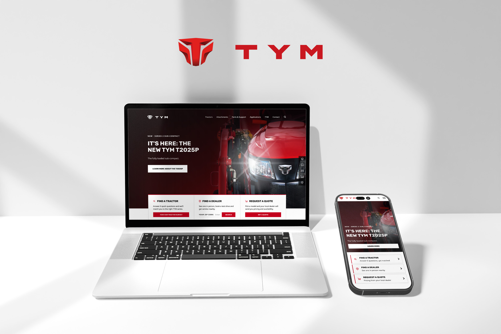
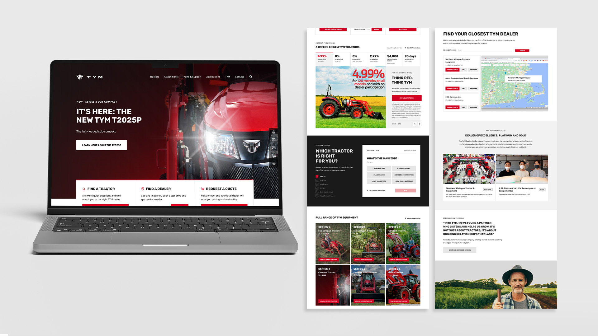
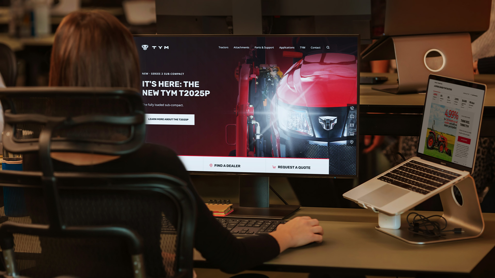
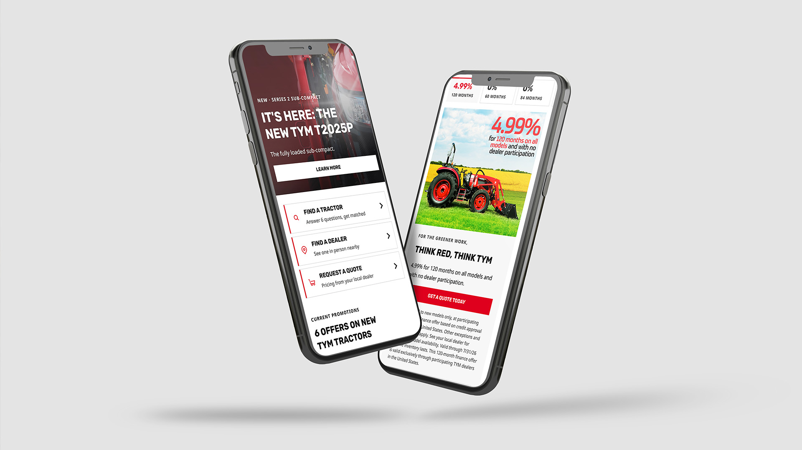
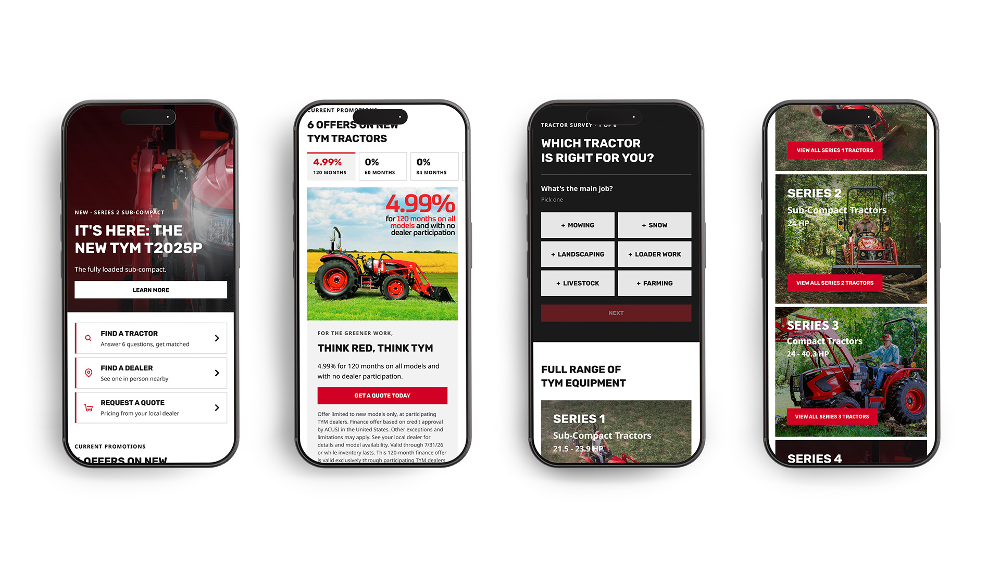
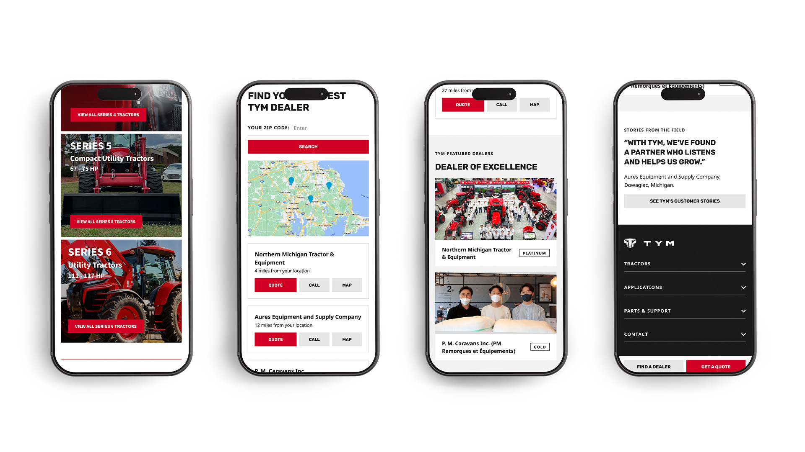

A website is often the first handshake between a brand and its customers. For TYM, that handshake needed to feel as solid as the machines behind it.
When TYM decided to rebrand its website, the goal went beyond a fresh coat of paint. It had to look sharper, run faster, and be ready for whatever comes next. So I set out to rebuild the experience from the ground up, designing a site that reflects who TYM is today while giving the brand room to grow.
I designed every part of the new website, from the overall look to each individual page. As project lead, I partnered with an external development agency to manage server integration and performance optimization, making sure the site ran smoothly behind the scenes. I also built the site to work seamlessly on mobile, and set up an environment that allows future updates to be made quickly and easily. The result is a website that is not only beautiful today, but ready to evolve with TYM tomorrow.

On the previous website, visitors had to make unnecessary clicks to reach the page they wanted, and key icons were hard to find, tucked away at the bottom of the page. To help visitors find tractor information easily, I moved those resources to the top of the page and designed direct links to find a dealer or request a quote. I placed TYM’s monthly offers right below the main banner so they are easy to spot. By identifying what visitors need most, including a short survey, each tractor series, and the dealer locator, I designed the website around those priorities.


Since the majority of visitors browse on their phones, I built and optimized the website to give users a comfortable, easy experience. I streamlined the layout for smaller screens, prioritizing tractor series, monthly offers, and essential information so nothing feels crowded or hard to find.


